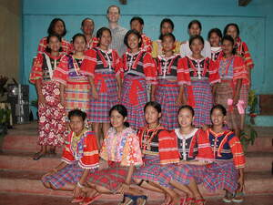

batek 
/batɔk/
n.
color
Eng. color
Online dict status: -
Usage level: M
adj.
(mabatek, mA1-) speckled; patterned; a type of design
Meupiya ne egpitawen ka mabatek ne kumbalè.
The patterned dress is nice to look at.
Nekeila ka te etew ne migkukumbalè te mabatek?
Do you know the person who dressed up with a multicolor?
Eng. speckled; patterned; design
Tag. dibuho; disenyo
OCM: Representative Art (deprecated) (532)
Online dict status: -
Usage level: M
v.
for someone (egbatek, migbatek/imbatek, agent, eg><ø-) to color something (egbateken, imbatek/migbatek/pigbatek, patient, eg><en-)
Eng. color, to
Online dict status: -
Usage level: M
Updated by: RJH,AAA,RUL,QDL,RJH
Last updated: 21/Dec/2011
"batek" in healthbook "Ka an-anayan ne peg-uyamu ni Lolita te mig-anak"
"batek" in healthbook "Ka an-anayan ne peg-uyamu ni Lolita te mig-anak"
This page last updated: 19/May/2012
Copyright © 2009-2010, Matigsalug Language Christian Association, Inc